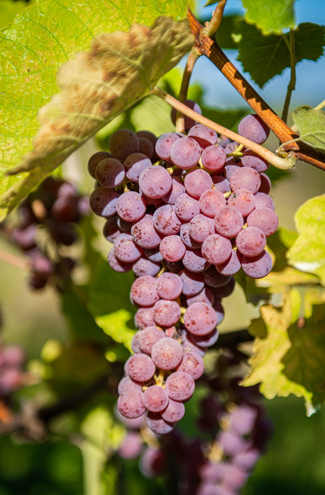
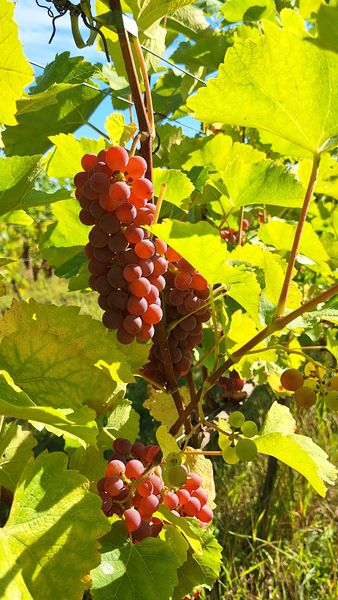
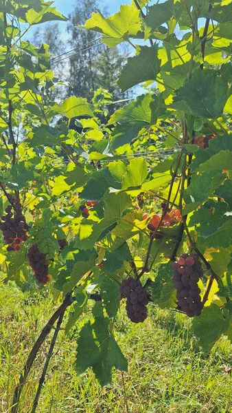

Biała odmiana
Souvignier Gris
Odporna odmiana o aromatach brzoskwini i cytrusów, dająca wina o świeżej kwasowości i lekkiej strukturze.
Souvignier Gris to biała odmiana z grupy tak zwanych odmian odpornych — wyhodowana z myślą o naturalnej odporności na choroby grzybowe. W praktyce oznacza to zdrowe grona i uprawę, która nie wymaga intensywnej ochrony.
W kieliszku daje wina wytrawne o świeżej kwasowości i lekkiej strukturze, z aromatami owoców pestkowych — brzoskwini i moreli — oraz nutą cytrusów. Sprawdza się także jako baza win musujących.
Jak uprawiamy Souvignier Gris w Kielnej Górze
Winnica Kielna Góra leży w Kielnarowej, około 10 km od centrum Rzeszowa, na stoku o południowym nachyleniu. Pierwsze krzewy zasadziliśmy w 2020 roku, a gospodarujemy na jednym hektarze. Souvignier Gris jest jedną z siedmiu odmian, które tu uprawiamy — wszystkie dobrane pod kątem odporności i naszego klimatu.
Charakterystyka
- odporna na choroby
- aromaty owoców pestkowych
- dobra do win musujących
Zdjęcia


Wina z tej odmiany
Sprawdź aktualną dostępność w naszym sklepie.